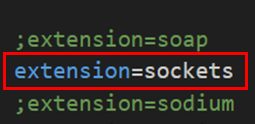
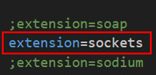

【フレームワークのご紹介】
はじめに
このsoket-managerフレームワークはソケット通信サーバーの開発を支援するための環境です。
新規プロジェクトをはじめWebsocketサーバー開発環境、マインクラフト連携版チャットサーバー（デモ用）等のプロジェクトをご用意しています。
まずはデモ用の以下の画面をご覧ください。
新規プロジェクトをはじめWebsocketサーバー開発環境、マインクラフト連携版チャットサーバー（デモ用）等のプロジェクトをご用意しています。
まずはデモ用の以下の画面をご覧ください。

これはWebsocketサーバーを使ってマインクラフトとブラウザ間でチャットを行っている様子です。
通常のコメント発信とプライベート送信（マインクラフト側はウィスパー機能で実装）に対応しています。
一部例外はありますが、マインクラフトやほとんどのWebブラウザにはWebsocket通信の機能が実装されていますので、Websocketサーバーを通じてこのデモのようにマインクラフト⇔Webブラウザ間で通信を行う事が可能です。
（ブラウザのWebsocket機能はそのまま使えますので別途モジュールを適用する必要はありません）
以降ではデモサーバーのインストールとブラウザやマインクラフトからのアクセス方法をご紹介しています。
通常のコメント発信とプライベート送信（マインクラフト側はウィスパー機能で実装）に対応しています。
一部例外はありますが、マインクラフトやほとんどのWebブラウザにはWebsocket通信の機能が実装されていますので、Websocketサーバーを通じてこのデモのようにマインクラフト⇔Webブラウザ間で通信を行う事が可能です。
（ブラウザのWebsocket機能はそのまま使えますので別途モジュールを適用する必要はありません）
以降ではデモサーバーのインストールとブラウザやマインクラフトからのアクセス方法をご紹介しています。
デモ確認環境
以下の構成はあくまで動作確認時の環境です。
事前にインストールが必要なのはPHPとComposerのみです。
事前にインストールが必要なのはPHPとComposerのみです。
- プラットフォーム
- Windows10
- 統合環境
- Xampp v3.3.0
- マインクラフト
- Windows Edition v1.20.73
- ブラウザ
- Chrome v123.0.6312.123
- 言語
- PHP v8.2.4（v8.1.0以降）
- Composer
- v2.6.5
インストール
あらかじめPHP8.1.0以降とComposerがインストールされているものとします。
※ここではXAMPP環境を使っている前提で説明していますが、デフォルトとは別の場所に格納している場合やLinux等の別の環境で利用されている場合は適宜読み替えてください。
php.ini内のモジュール定義がコメントアウトされている場合はコメントをはずして有効にする。

以下のコマンドを実行してenabledになっている事を確認。
PowerShellで確認
これで拡張モジュールであるsocketsが有効になりました。
※GitHubから直接ダウンロードする場合は>> こちらからどうぞ。
デモ版のインストール
拡張モジュールの適用
ライブラリを利用するにはまずsockets拡張モジュールを適用する必要がありますが既に入っている場合はこの項目は読み飛ばしてください。※ここではXAMPP環境を使っている前提で説明していますが、デフォルトとは別の場所に格納している場合やLinux等の別の環境で利用されている場合は適宜読み替えてください。
php.ini内のモジュール定義がコメントアウトされている場合はコメントをはずして有効にする。

以下のコマンドを実行してenabledになっている事を確認。
PowerShellで確認
> php -i | Select-String -pattern 'Sockets Support'
Sockets Support => enabled
これで拡張モジュールであるsocketsが有効になりました。
Composerでインストール
今回のデモ環境は以下のコマンドでインストールできます。※GitHubから直接ダウンロードする場合は>> こちらからどうぞ。
デモ版のインストール
> composer create-project socket-manager/demo-project <インストール先のディレクトリ名>
動作確認
冒頭でご紹介したデモ版を動かしてみます。
サーバーの起動（10000ポートで起動する場合）
クライアントのファイル
ループバックアドレス許可の設定
マインクラフトから接続する時は冒頭のデモのように以下の形式で入力します。
マインクラフトからの接続
上記のユーザー名はマインクラフト内のユーザー名でなくても構いません。
あくまでデモ版のサーバー内で使用する名前です。
マインクラフトからは以下のように#でメンションを付ける事でプライベート送信ができます。
マインクラフトからのプライベート送信
マインクラフトから退室する時は×ボタンで閉じてください。
サーバーサイドの準備
プロジェクトルートで以下のコマンドを実行するだけで準備完了です。サーバーの起動（10000ポートで起動する場合）
> php worker app:minecraft-chat-server 10000
クライアント（ブラウザ）の準備
インストールしたプロジェクトには以下のディレクトリにjQuery/React版のHTMLファイルが入っていますのでお好きな方をブラウザにドラッグ＆ドロップしてください（Webサーバーを起動する必要はありません）。クライアントのファイル
/app/client/jquery/chat.html（jQuery版）
/app/client/react/chat.html（React版）
クライアント（マインクラフト）の準備
マインクラフトはUWPアプリのため以下のコマンドを実行してループバックアドレスへのアクセスを許可しておく必要があります。ループバックアドレス許可の設定
> CheckNetIsolation.exe LoopbackExempt -a -n="Microsoft.MinecraftUWP_8wekyb3d8bbwe"
マインクラフトから接続する時は冒頭のデモのように以下の形式で入力します。
マインクラフトからの接続
> /wsserver localhost:10000/<ユーザー名>
上記のユーザー名はマインクラフト内のユーザー名でなくても構いません。
あくまでデモ版のサーバー内で使用する名前です。
マインクラフトからは以下のように#でメンションを付ける事でプライベート送信ができます。
マインクラフトからのプライベート送信
> <メッセージ>#<ユーザー名>
マインクラフトから退室する時は×ボタンで閉じてください。
おわりに
一応マインクラフトからの退室コマンドもご用意していますが現状での使用はお勧めできません。
マインクラフトからの退室コマンド
上記コマンドで退室してもマインクラフト側から再接続がかかったり、再接続時に失敗する事が頻繁にあります。
マインクラフトの切断処理の検証内容については▶切断フレームの検証⇒マインクラフトの場合のページでまとめています。
今回ご紹介させて頂いたのはデモサーバーの一部ですが、その他のサーバーについては▶デモサーバーの種類のページでご紹介しています。
ホスト名やポート番号等の設定ファイルの詳細は▶デモの設定ファイルのページでまとめています。
マインクラフトからの退室コマンド
> $exit
上記コマンドで退室してもマインクラフト側から再接続がかかったり、再接続時に失敗する事が頻繁にあります。
マインクラフトの切断処理の検証内容については▶切断フレームの検証⇒マインクラフトの場合のページでまとめています。
今回ご紹介させて頂いたのはデモサーバーの一部ですが、その他のサーバーについては▶デモサーバーの種類のページでご紹介しています。
ホスト名やポート番号等の設定ファイルの詳細は▶デモの設定ファイルのページでまとめています。